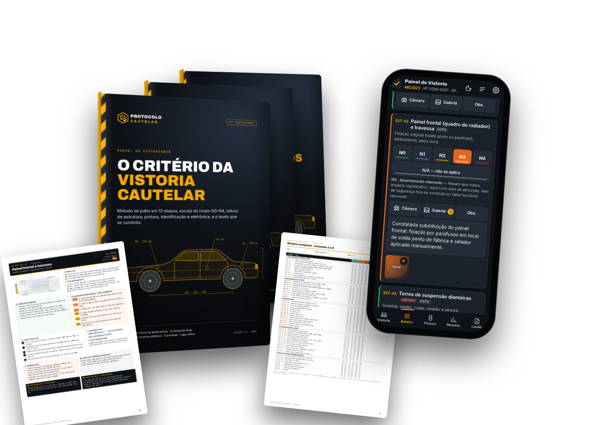
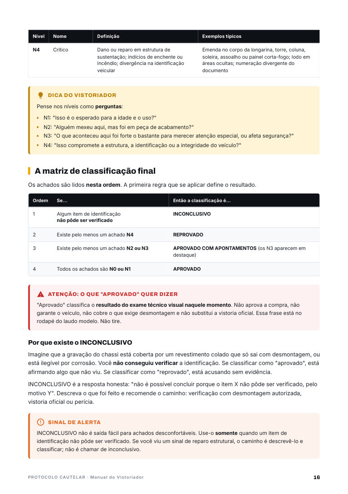
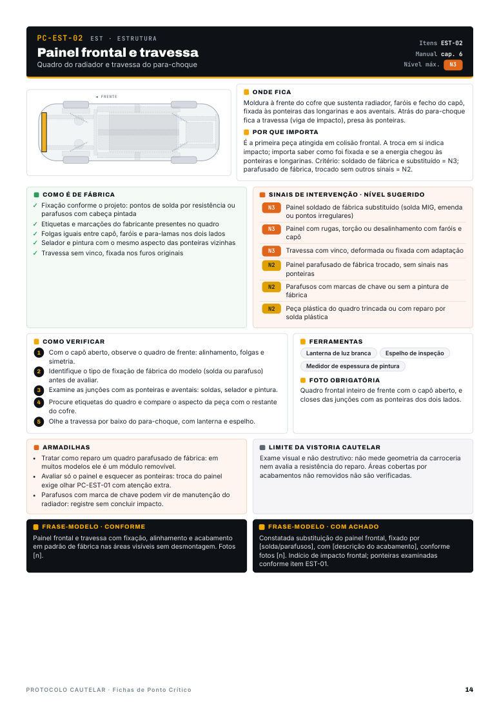
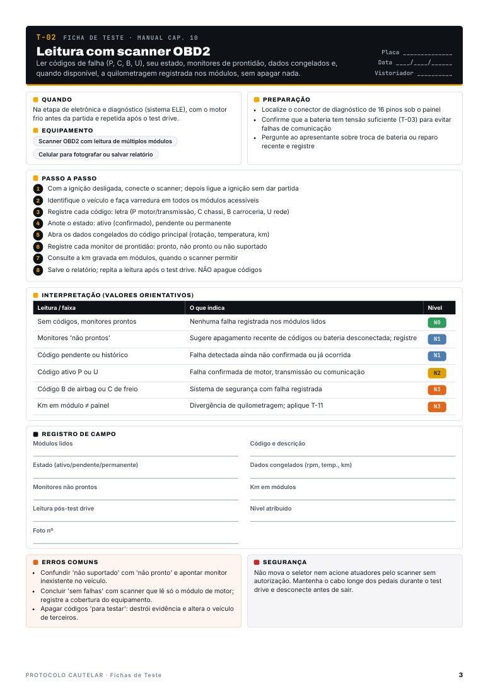
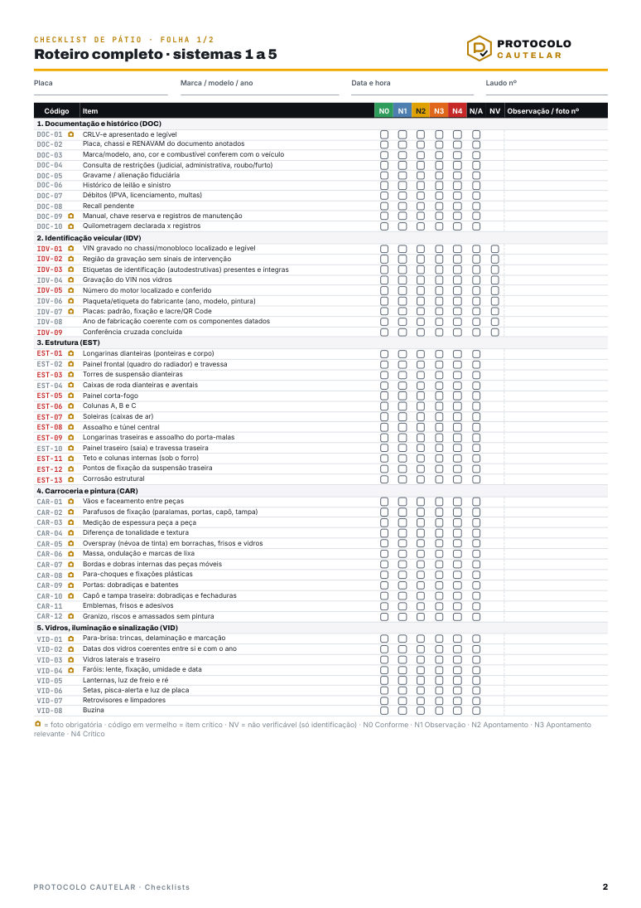
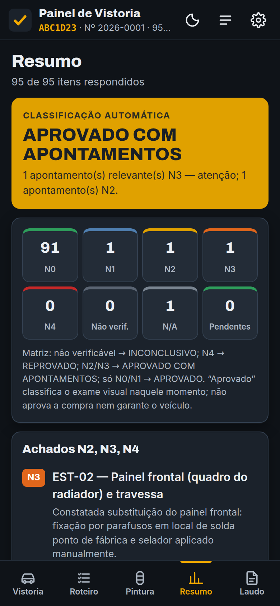
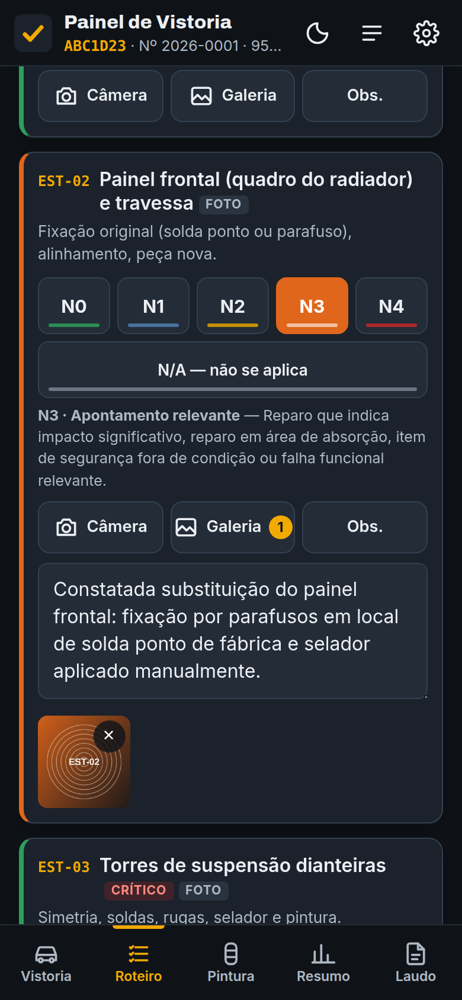
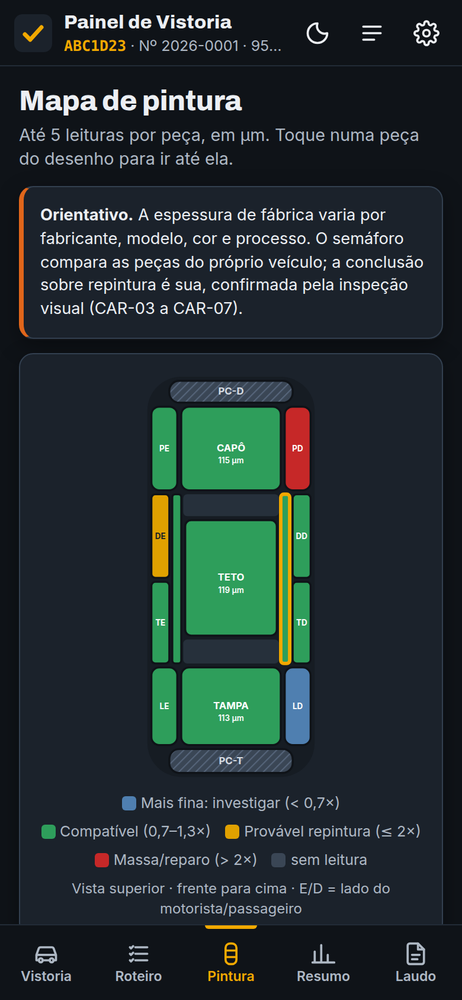
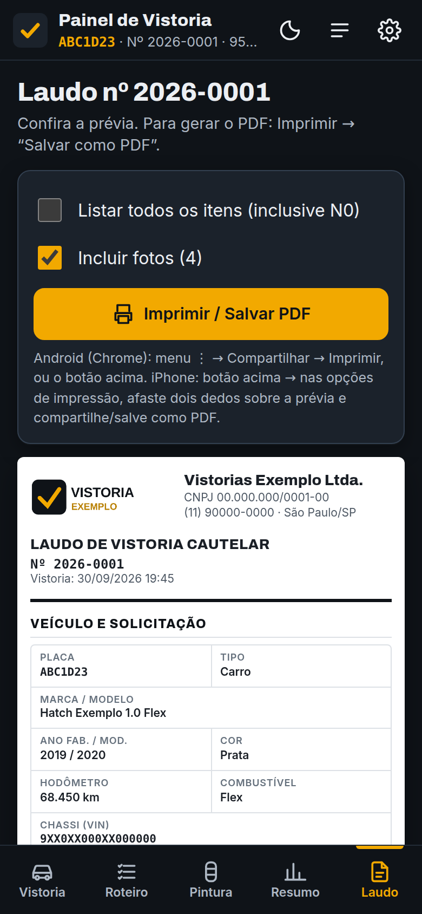

Para quem faz vistoria cautelar
Manual técnico, 60 fichas de ponto crítico, checklists e um app que funciona offline no celular, classifica e gera o laudo com a sua marca. Tudo com a mesma escala de níveis.
Material digital · Acesso por e-mail após a confirmação do pagamento · Garantia de 7 dias

O problema
Os dois viram as mesmas coisas. O que mudou foi o critério, que estava só na cabeça de cada um. Critério que não está escrito não se explica ao cliente, não se ensina à equipe e não se defende quando o vendedor liga bravo na segunda-feira.
O que é
Cada ficha, item de checklist e tela do app remete ao capítulo que explica o porquê. Você recebe a ferramenta e o critério que a faz funcionar.
Uma rotina fixa, do agendamento ao laudo, que impede de pular a parte que esconde o problema.
Cinco níveis para qualquer achado e uma matriz que leva à classificação final, sempre igual.
Roteiro fotográfico e evidência em cada achado: o que torna o laudo defensável.
Redação descritiva, limites claros e frases-modelo prontas para cada tipo de achado.
O que você recebe
O item EST-01 (longarinas dianteiras) é o mesmo em todo lugar. Você nunca procura duas vezes.





Como o critério funciona
| Achado constatado | Nível |
|---|---|
| Riscos superficiais sem repintura | N1 |
| Para-choque dianteiro repintado | N2 |
| Painel frontal substituído com solda fora do padrão | N3 |
| Luz do airbag não acende no autoteste | N3 |
| Emenda no corpo da longarina | N4 |
| Lodo seco e oxidação sob o carpete | N4 |
A matriz (nesta ordem)
O resultado INCONCLUSIVO protege você: quando a identificação não pôde ser verificada, o laudo não afirma o que você não viu. "Aprovado" classifica o exame técnico visual naquele momento; não aprova a compra nem garante o veículo.
App Painel de Vistoria
Um arquivo que abre no navegador do celular e funciona sem internet. Você marca os níveis, tira as fotos, mede a pintura e o app aplica a matriz. No fim, gera o PDF com a sua logo e os seus dados.



Para quem é
A diferença
| Fichas e modelos soltos | Protocolo Cautelar | |
|---|---|---|
| Critério de classificação | Implícito, varia de ficha para ficha | Escala N0–N4 e matriz escrita, igual em tudo |
| Porquê de cada verificação | Não explicado | Manual de 66 páginas referenciado em cada ficha |
| Quando não dá para verificar | Aprovar ou reprovar "no escuro" | Resultado INCONCLUSIVO, com o motivo |
| Pintura | Número solto | Referência do próprio veículo e leitura relativa |
| Laudo | Modelo em branco | App que classifica e gera o PDF, com frases-modelo por achado |
| Proteção do vistoriador | Genérica | Limites, termo de ciência, LGPD e redação defensiva |
A oferta
[OU PARCELAMENTO CONFORME A PLATAFORMA]
No checkout, você pode adicionar:
Acesso imediato por e-mail · Pagamento processado pela plataforma [PLATAFORMA]
Abra o material, use numa vistoria, teste o app. Se não for o que você esperava, peça o reembolso em até 7 dias pela própria plataforma de compra e receba 100% do valor pago, sem perguntas.
Dúvidas frequentes
A vistoria cautelar é um serviço privado, contratado livremente entre as partes, e não depende do credenciamento exigido para a vistoria de transferência. Mesmo assim, recomendamos formalizar a atividade, contratar seguro de responsabilidade civil e buscar capacitação contínua. Confirme também as regras do seu município e estado [VERIFICAR].
Não. A vistoria de identificação para transferência é exclusiva de empresas credenciadas pelo órgão de trânsito. O Protocolo é um material técnico de apoio à vistoria cautelar e não é curso credenciado.
Sim. Há checklists, fichas de ponto crítico e um roteiro no app específicos para motos e para veículos com chassi (picapes e utilitários).
Os checklists, fichas e o manual são PDFs prontos para imprimir e consultar. As planilhas são Excel editáveis. Os modelos de documento (laudo, contratos, termo) são Word editáveis e vêm no Pacote Jurídico e Comercial.
Sim. O app gera o laudo com a sua logo e os seus dados, sem a marca do Protocolo. Os modelos de documento têm espaço para a sua logo.
Não precisa de internet: é um arquivo que abre no navegador e guarda os dados só no seu aparelho. Funciona em Android e no computador. No iPhone, ele deve ser aberto por um navegador (a pré-visualização do app Arquivos não executa o painel); o guia de uso explica o passo a passo.
Logo após a confirmação do pagamento, você recebe por e-mail o acesso à área de membros, com os arquivos para baixar.
Sim, desde que você tenha interesse técnico e disposição para praticar. O manual começa pelos fundamentos e pelos limites do serviço, e o plano de 30 dias organiza os primeiros passos. O material não promete renda: o resultado depende do seu mercado e da qualidade do seu trabalho.
Não. Espessura de pintura, tensões de bateria e outras faixas são orientativas e variam por fabricante e modelo. Por isso o Protocolo ensina a comparar com o próprio veículo e a confirmar com sinais visuais.
[DEFINIR POLÍTICA: por exemplo, atualizações da edição 1.x sem custo durante 12 meses.]
Você tem 7 dias de garantia incondicional. É só pedir o reembolso pela plataforma de compra.
Método, fichas, checklists e o app que fecha o laudo no pátio.
Quero o Protocolo Cautelar →